Corte feminino
Conversa no espelho, lavagem, corte e finalização simples.
1ha partir deR$ 120
Agendar
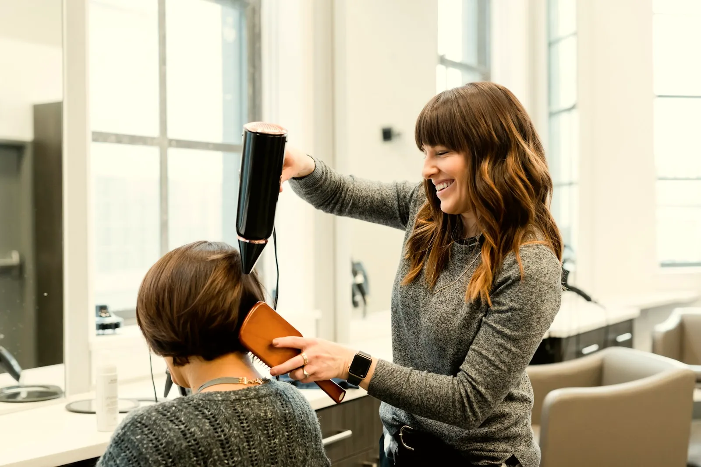
Serviços e preços
Cada visita começa com uma conversa sobre o seu cabelo, a sua rotina e o resultado que você quer. Os preços são de referência e o valor final é fechado antes de começar.
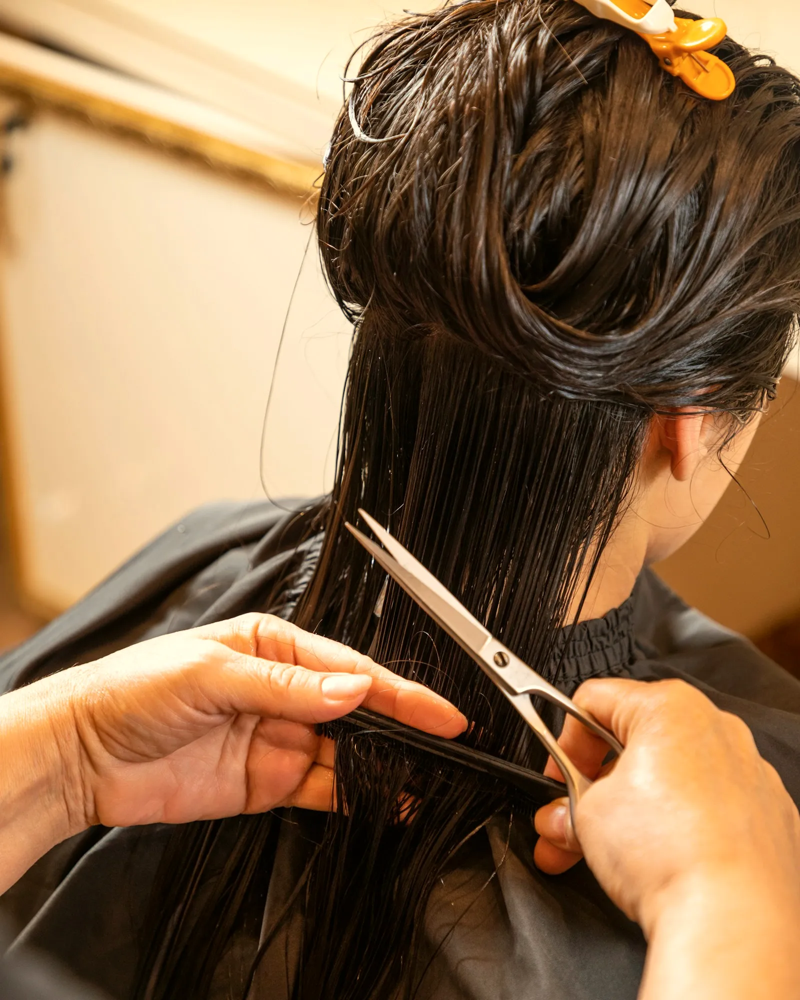
Corte pensado para o jeito que você usa o cabelo no dia a dia, e escova com protetor térmico sempre.
5 serviçosConversa no espelho, lavagem, corte e finalização simples.
Para cabelo abaixo do ombro: corte em camadas e escova modelada.
Acerto da franja ou só das pontas, sem lavagem.
Lavagem, protetor térmico e ondas com escova redonda ou babyliss.
Prova da ideia por foto antes do dia, preso ou semipreso.
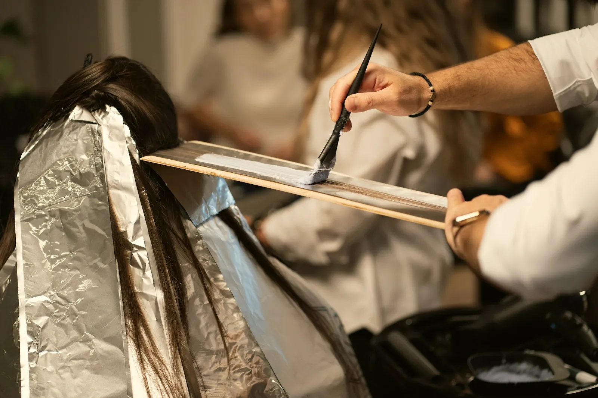
Toda química começa com teste de mecha e diagnóstico do fio. O valor final sai antes de abrir o primeiro pote.
3 serviçosTeste de mecha, cor na raiz até 3 cm, lavagem e secagem.
Teste de mecha 48h antes
Diagnóstico, teste de mecha, clareamento à mão livre, tonalização e escova.
Teste de mecha 48h antes
Corrige o tom e devolve o brilho entre uma mecha e outra.
Teste de mecha 48h antes
Corte a seco, cacho por cacho, e finalização que você consegue repetir em casa.
2 serviços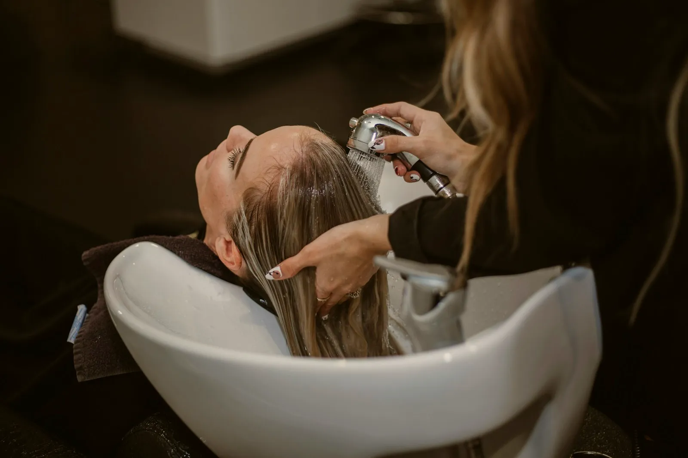
Hidratação, reconstrução e alinhamento sem formol, com produtos de registro na Anvisa.
3 serviçosMáscara de tratamento com vapor e escova no fim.
Para fio quebradiço depois de química ou descoloração.
Teste de mecha, produto com registro na Anvisa e escova de selagem.
Teste de mecha 48h antes
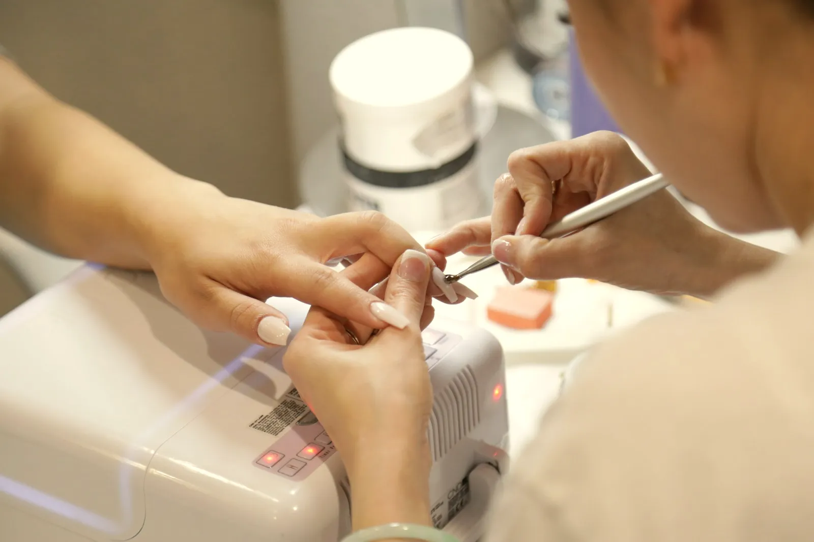
Alicate esterilizado em autoclave, lixa e palito novos para cada cliente, abertos na sua frente.
3 serviços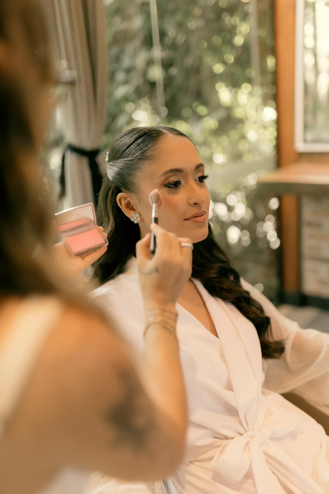
Design que respeita o seu desenho natural e maquiagem para festa, noiva ou formatura.
3 serviçosMapeamento do rosto e limpeza na pinça, sem afinar o desenho natural.
Design e preenchimento com henna. Teste de sensibilidade antes.
Teste de sensibilidade 48h antes
Pele, olhos e boca para festa ou formatura. Cílios postiços inclusos.
Tendências da estação
Referências para levar para a conversa no espelho. A profissional adapta cada uma ao seu fio, ao formato do rosto e ao tempo que você tem para arrumar o cabelo.
Corte a seco que abre o cacho sem perder o comprimento.
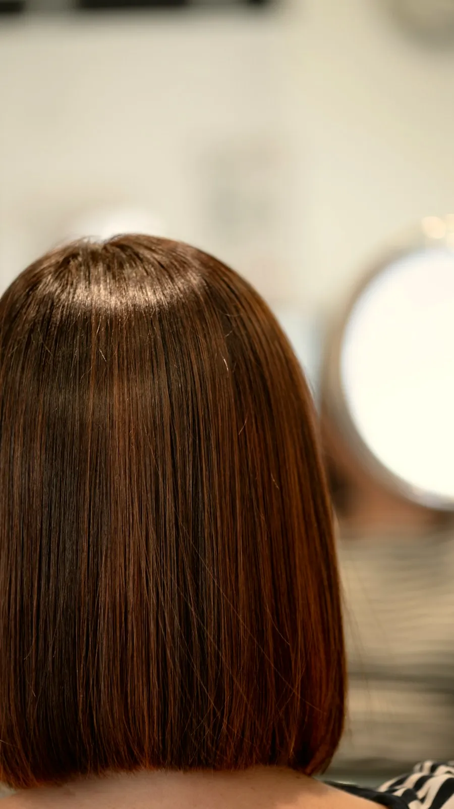
Linha reta na altura do queixo e brilho de escova.
Mechas finas com tonalização fria para não amarelar.
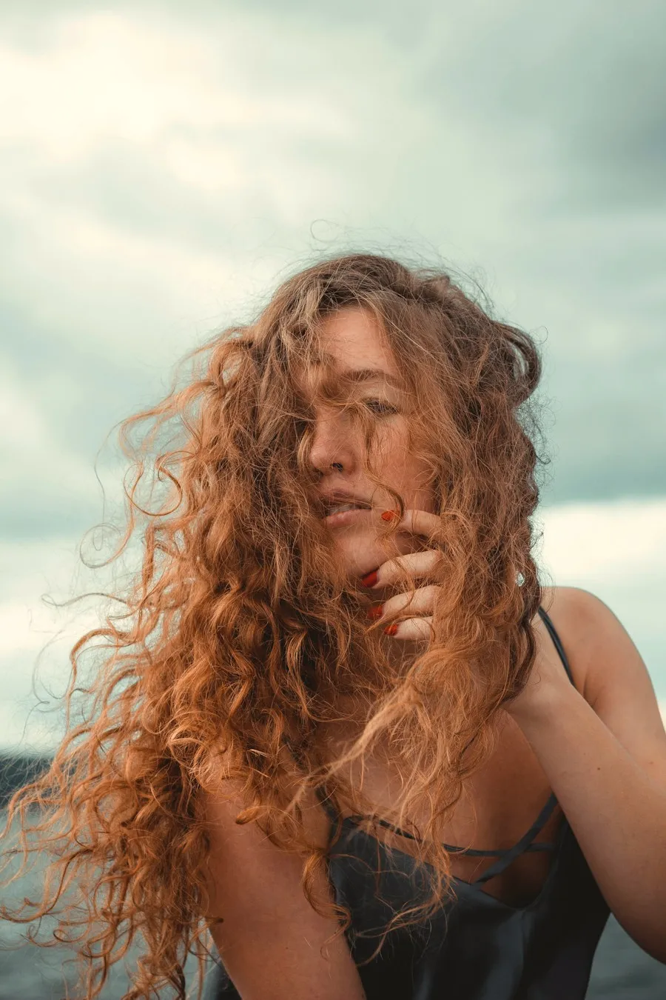
Ruivo acetinado que desbota bonito entre as visitas.
Volume nas laterais e franja de cachos.
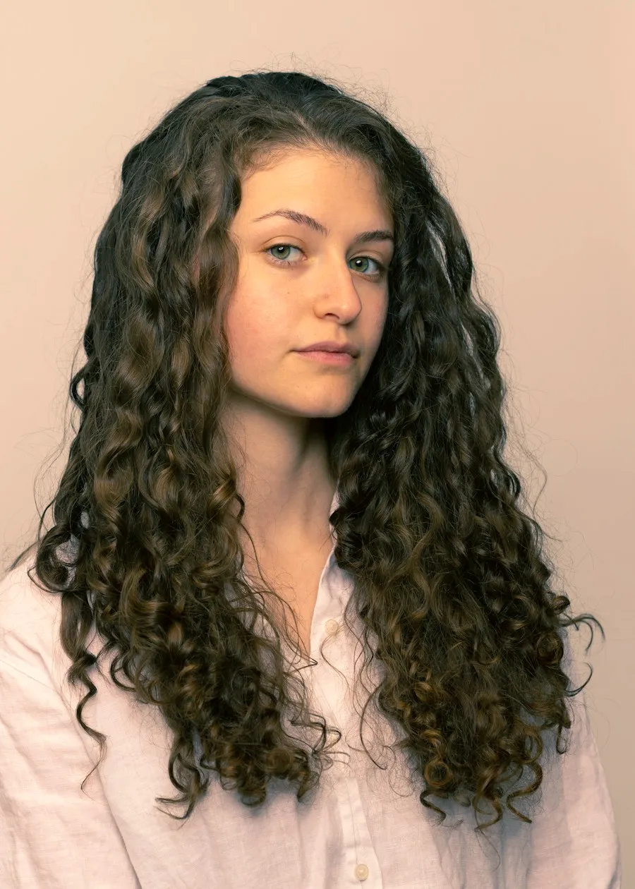
Camadas longas que deixam o cacho cair mais leve.
Luzes no contorno do rosto sobre cacho natural.

Comprimento no ombro com pontas desfiadas.
O jeito Mecha
Um salão pequeno, com hora marcada e tempo de sobra para cada pessoa. O que muda de verdade está nos detalhes que você vê na cadeira.
Toda visita começa com uma conversa no espelho. O valor, o tempo e o resultado são combinados antes de começar, e nada muda sem você saber.
Química só depois do teste de mecha. Se o fio não aguenta, a gente explica o motivo e propõe outro caminho.
Agenda com folga entre horários, para ninguém ser atendida correndo. Café passado na hora e Wi-Fi.
Antes de sair, você leva a dica de finalização, os produtos certos para o seu fio e a data sugerida da volta.

9anos de bairro, desde 2017
4,9de nota no Google
860avaliações de clientes
15dias de garantia na cor
Garantia de ajuste
Volte dentro do prazo e a mesma profissional revê o serviço sem custo. Vale para o que foi combinado no espelho, seguindo os cuidados passados no dia.
| Corte e escova | Até 7 dias |
|---|---|
| Coloração, mechas e gloss | Até 15 dias |
| Alinhamento e tratamentos químicos | Até 15 dias |
| Esmaltação em gel | Até 5 dias |
| Design de sobrancelha | Até 7 dias |
| Maquiagem | Antes de você sair do salão |
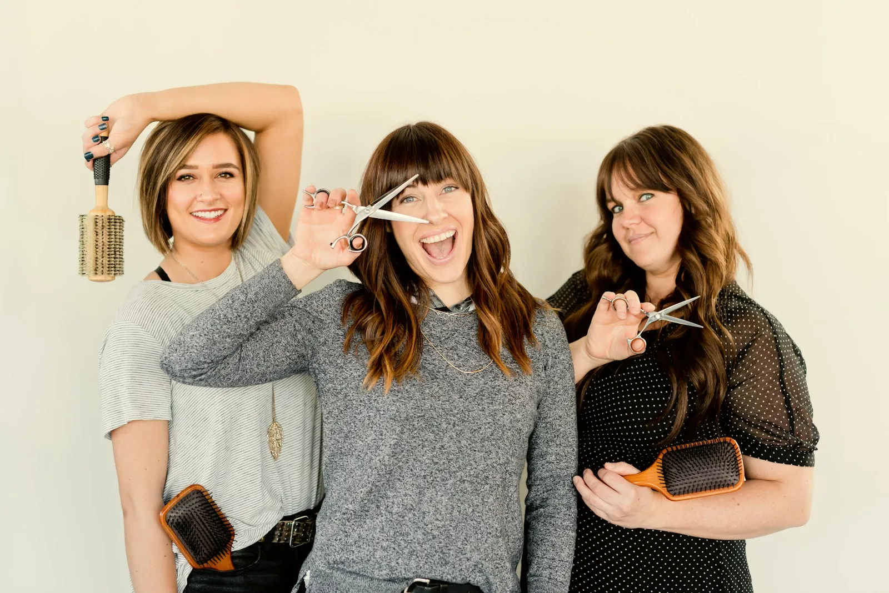
Quem cuida de você
Desde 2017 na Vila Madalena, a Mecha junta cabeleireira, colorista, manicure e designer de sobrancelha no mesmo endereço. Cada uma tem a própria agenda, então você escolhe com quem quer ser atendida.

Colorista e responsável técnica
Mechas, balayage e correção de cor
12 anos de profissão
Ver perfil
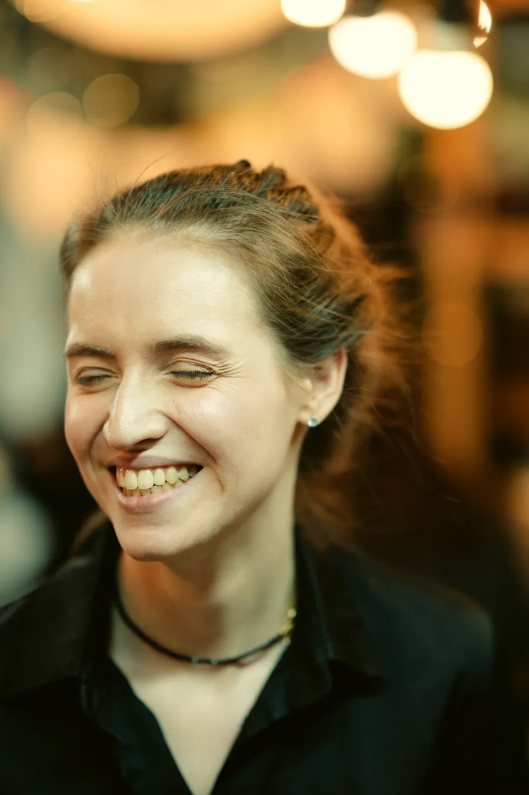
Manicure e nail designer
Esmaltação em gel e unhas curtas bem feitas
7 anos de profissão
Ver perfil
Designer de sobrancelha e maquiadora
Design natural, henna e maquiagem de festa
8 anos de profissão
Ver perfilHistórias de clientes
Arraste a linha sobre a foto para comparar. Cada caso mostra quanto tempo levou e quanto custou, para você chegar sabendo o que esperar.
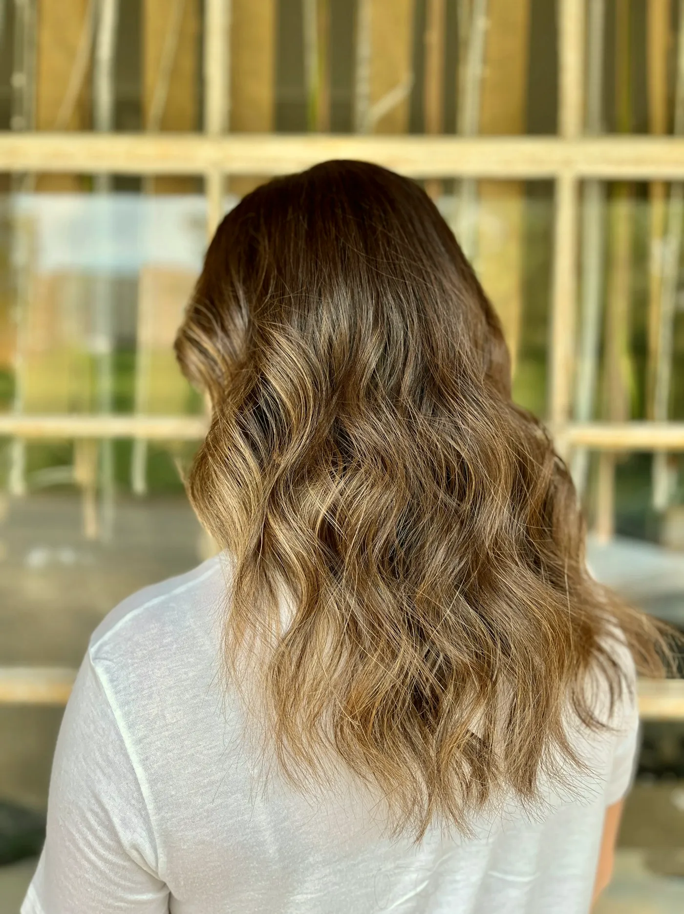

Mechas, tonalização e escova
Balayage feito à mão livre em duas etapas, com tonalização bege para não amarelar.

Hidratação e escova
Escova lisa com protetor térmico, sem química. Na próxima lavagem os cachos voltam como eram.
Fotos ilustrativas de pessoas diferentes. No site publicado entram fotos reais de clientes, com autorização de imagem.
Avaliações
Fizeram o teste de mecha uma semana antes e o tom ficou exatamente o da foto que eu levei. Três meses depois ninguém percebe a raiz.
Cheguei no horário e fui atendida no horário. A escova durou até o terceiro dia e o preço foi o mesmo do site.
Primeiro salão que cortou meu cabelo seco, cacho por cacho. Saí sabendo finalizar em casa.
A Larissa abriu o kit esterilizado na minha frente. O gel durou três semanas sem descascar.
A Renata explicou cada passo e não afinou nada. Parece que eu nasci com essa sobrancelha.
Fiz a maquiagem da formatura e ela durou a festa toda. Ainda me ensinaram a retocar o batom.
Sem cheiro forte e sem ardência. Mostraram o registro do produto antes de começar.
Disse que queria tirar pouco e tiraram pouco. Parece óbvio, mas não é em todo lugar.
No Instagram
Mecha Salão & Barbearia
Salão e barbearia na Vila Madalena. Preço combinado antes de começar.
Seguir no InstagramPara levar para casa
Reserve pelo WhatsApp e retire no balcão. A profissional explica como usar cada um no seu tipo de fio.
Antes de vir
Detalhes práticos para chegar tranquila e sem surpresa.
Entrada no nível da calçada e lavatório adaptado.
Conveniado na Rua Fidalga, com a primeira hora grátis.
A quatro quadras da estação Vila Madalena, linha verde.
Corte infantil com hora marcada e cantinho com livros.
Sem hora marcada só se houver cadeira livre. Ligue antes.
Débito, crédito em até 3 vezes nos serviços de cor e Pix.
Teste de mecha e de sensibilidade 48 horas antes.
Café passado na hora, chá e água com gás enquanto você espera.
Políticas da casa
Peça pelo formulário, WhatsApp ou telefone. Confirmamos em até uma hora no horário de funcionamento e lembramos na véspera. Serviços de cor e alinhamento acima de R$ 300 pedem sinal de 30% via Pix, abatido no valor final.
Tolerância de 15 minutos. Depois disso o serviço pode ser reduzido para caber no horário ou remarcado, conforme a agenda da profissional.
Sem custo até 24 horas antes, pelo WhatsApp. Com menos de 24 horas, o sinal vira crédito para uma nova data em até 60 dias. Duas faltas sem aviso pedem sinal em todos os próximos horários.
Ajuste sem custo dentro do prazo de cada serviço, com a mesma profissional, quando algo não ficou como combinado no espelho. A garantia não cobre mudança de ideia sobre o resultado combinado nem processos feitos fora do salão.
Coloração, mechas, tonalização, alinhamento e henna só depois do teste de mecha e de sensibilidade, feito 48 horas antes para quem nunca fez aqui. Avise alergias, gestação, medicamentos e química feita fora do salão nos últimos 6 meses. Retoque de tom sem custo em até 15 dias, seguindo os cuidados passados no dia. Se o fio não aguentar o processo, a profissional explica o motivo e propõe outro caminho.
Pix, débito e crédito, com mechas, balayage e alinhamento em até 3 vezes sem juros. Os valores "a partir de" dependem do comprimento e do volume e são fechados na conversa, antes do serviço.
Dúvidas
Não achou a sua? Mande no WhatsApp que a recepção responde.
Pelo formulário no fim desta página, pelo WhatsApp ou por telefone. Você escolhe a profissional ou deixa sem preferência, e a gente encaixa no primeiro horário livre.
Só se houver cadeira livre. Cor, escova e unhas em gel precisam de tempo reservado, então vale ligar antes.
Raiz leva cerca de uma hora e meia. Mechas e balayage, de três horas e meia a quatro horas e meia, já com a escova. Combinamos o tempo na conversa.
Sim, sempre. Teste de mecha para cor e alinhamento e de sensibilidade para henna. Para quem nunca fez química aqui, ele é feito 48 horas antes.
Pode. Escreva no campo de observações, por exemplo unhas durante a escova, e a gente monta a agenda com as duas profissionais.
Linhas profissionais com registro na Anvisa, escolhidas para cada tipo de fio. Os que vendemos no balcão estão na seção Para levar para casa.
Sem custo até 24 horas antes. Com menos tempo, o sinal vira crédito para outra data em até 60 dias.